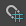

下表列出了“节点编辑器”(Node Editor)的基本功能概览。
| 目标 | 操作 |
|---|---|
|
显示连接。 |
选择节点，并在工具栏中单击 |
|
更改节点的视图模式以显示更短或更长的属性列表。 |
使用 1、2、3 和 4 热键在不同的视图模式之间切换。 |
|
创建节点。 |
按 Tab 键，然后输入节点的类型。 或者，可以 |
|
使用连接线创建连接。 |
通过单击 单击源端口和目标端口，或者单击鼠标中键或左键进行拖动，以便在输出和输入属性之间创建连接线。 |
|
创建默认节点连接。 |
在按住 Ctrl 键的同时使用鼠标中键将节点拖动到“节点编辑器”(Node Editor)中的另一个节点上。 |
|
使用“连接编辑器”(Connection Editor)连接节点。 |
在按住 Shift 键的同时使用鼠标中键将节点拖动到“节点编辑器”(Node Editor)中的另一个节点上。 |
|
将默认输出连接到特定输入属性。 |
使用鼠标中键将节点拖动到“节点编辑器”(Node Editor)中的另一个节点上。 |
|
删除连接。 |
拖动连接线，然后在背景区域中释放鼠标以删除连接。 或者，可以单击连接线/框选连接线，然后按 Backspace 键或 Delete 键。 |
|
更改现有的连接。 |
拖动连接线以断开连接，然后与新的输入/输出重新连接。 |
|
显示具有不同连接线样式的连接。 |
从“显示 > 连接样式”(Display > Connection Style)菜单中选择所需的样式。 |
|
创建或删除选项卡 |
单击最右侧选项卡中的 + 号以创建选项卡。 右键单击选项卡并选择“关闭选项卡”(Close Tab)，或者使用鼠标中键单击选项卡以将其删除。 也可以使用“选项卡”(Tabs)菜单。 |
|
撕下选项卡以放到其自己的窗口中 |
单击鼠标左键或鼠标中键拖动选项卡以关闭选项卡栏。 |
|
为节点制图，并将其添加到现有网络中。 |
启用“选项 > 添加制图模式”(Options > Additive Graphing Mode)。选择一个节点，然后单击 、 |
|
锁定视图。 |
单击 或者，可以从“节点编辑器”(Node Editor)工作区标记菜单禁用“创建时添加到图表中”(Add to Graph on Create)选项。 |
|
将节点固定到视图中。 |
可以固定节点，以便即使重新制图后该节点也保留在“节点编辑器”(Node Editor)视图中，并保持其位置和大小不变。已固定的节点显示有 |
|
捕捉到栅格。 |
单击  或选择“显示 > 栅格捕捉”(Display > Grid Snapping)将节点捕捉到栅格。 |
|
关闭栅格背景。 |
单击 |
|
在“节点编辑器”(Node Editor)中选择了节点时，您就不希望在场景视图中选择它，反之亦然。 |
在工作区域中单击鼠标右键以显示标记菜单，并禁用“同步节点编辑器/视口选择”(Sync Node Editor/Viewport Selection)选项。详细信息请参见节点编辑器(Node Editor)中的选择。 |
 图标，以显示输入和输出节点连接。
图标，以显示输入和输出节点连接。
 以显示创建节点窗格，然后用鼠标中键将所需的节点拖放到工作区中。
以显示创建节点窗格，然后用鼠标中键将所需的节点拖放到工作区中。
 ，将节点展开为完全模式。
，将节点展开为完全模式。
 。您创建的任何新节点都不会显示在图形中。
。您创建的任何新节点都不会显示在图形中。
 图标。使用热键 p 在固定和取消固定选定节点之间切换。启用
图标。使用热键 p 在固定和取消固定选定节点之间切换。启用 以开启和关闭栅格背景，或选择/取消选择
以开启和关闭栅格背景，或选择/取消选择